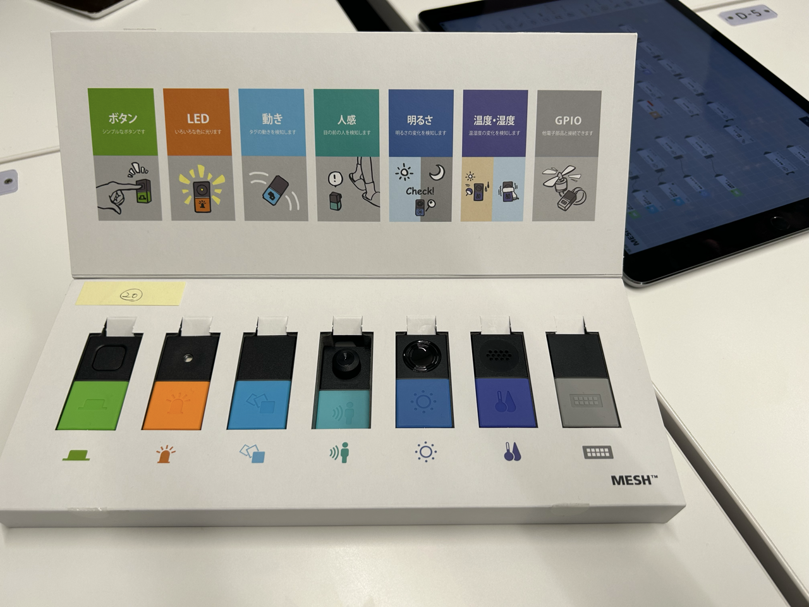

キックオフ
TODO
・プロジェクトの目的
・体制、役割の説明
・スケジュールの説明
・MESHの体験（ミニワークショップ）
・WSテーマを考えるためのディスカッション
・体制、役割の説明
・スケジュールの説明
・MESHの体験（ミニワークショップ）
・WSテーマを考えるためのディスカッション
ミニワークショップ
生活が楽しくなる「未来の仕掛け」を考える
MESHと日用品を使って、生活が楽しくなる「未来の仕掛け」を4人グループでプロトタイプし発表しました。
・用意された日用品
眼鏡、じょうろ、植木鉢、あひる、櫛、コップ、ゴミ箱、ブラシなど
・MESHでできること

MESHブロックとアプリ上のブロック（タイマー、カメラ、マイク、スピーカーなど）を繋げて、
「ボタン（MESH）を押したら音が鳴る」というような仕掛けがつくれる！
・私たちのプロトタイプ
「勉強やタスクに取り組むとき」を楽しくしたい！
→・やるべきことを始めるとき気持ちが乗らない、、「がんばろう」って思えない、、
・勉強をするとき、パソコンを使うときは「眼鏡」をかける
⇒眼鏡をかけたら応援してくれる仕組みをつくろう！
眼鏡をかけたら「がんばろう！」という音声が流れる
↓
タイマーが作動し、設定した時間が経過すると「歓声」と「拍手」の音が鳴り、取り組んだことを褒めてくれる
＜手順＞
1.眼鏡の横に「動きブロック」をつける（向きが右に変わったら）
2.アプリ上の「スピーカーブロック」で「がんばろう！」という音声を録音する
3.上画像のようにブロックを繋げる
ディスカッション
ワークショップのテーマを考える ○○（活動目標）をつくることで、△△（学習目標）を学ぶ
＜学習目標＞
ワークショップを通して、小学生たちに持ち帰ってもらいたいことは？

＜活動目標＞
自分たちの好きなこと・得意なことは？

次回までの課題
ディスカッションの内容を思い出しながら、
活動目標：「○○」について考え、MESHと××を使って制作し実演形式で発表することを通じて、
学習目標：△△を学ぶ/得る
の○○と△△に当てはまりそうなアイデアを考えてくる